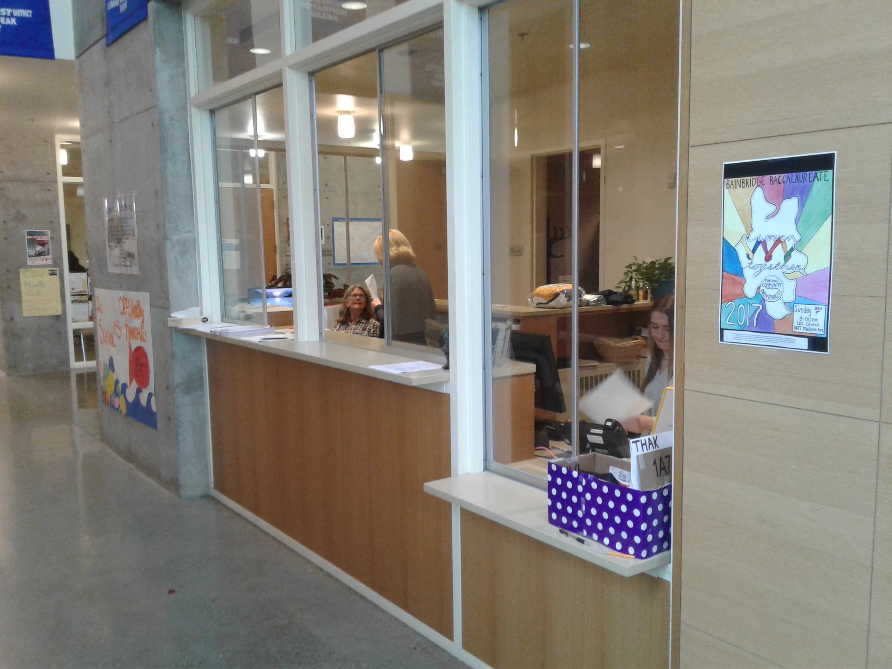
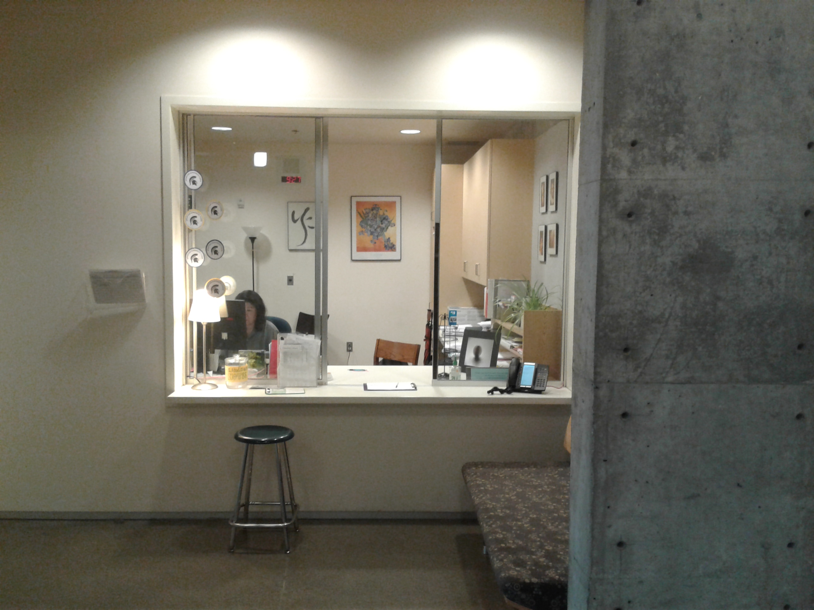
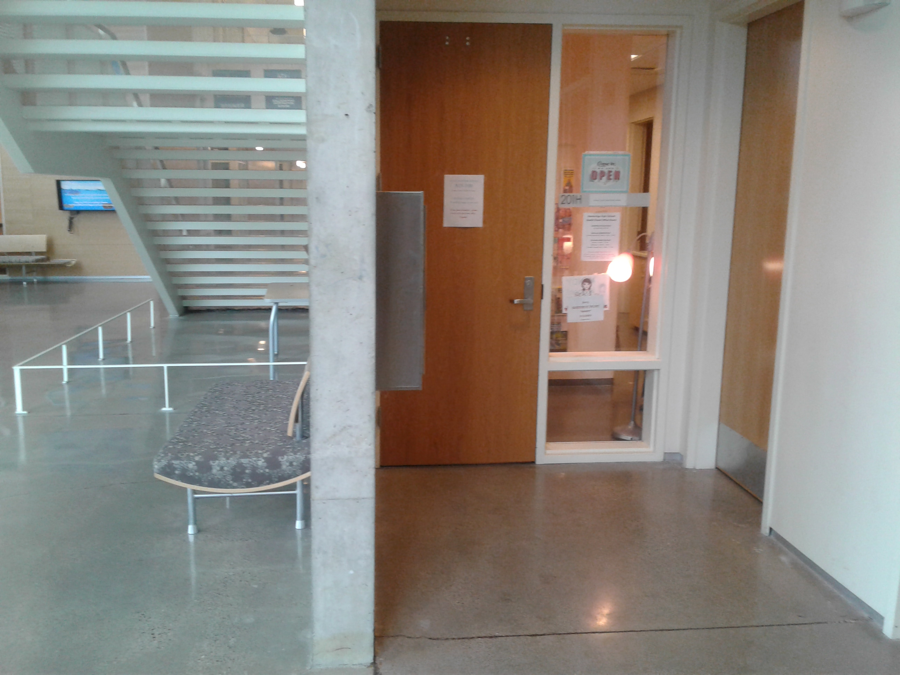
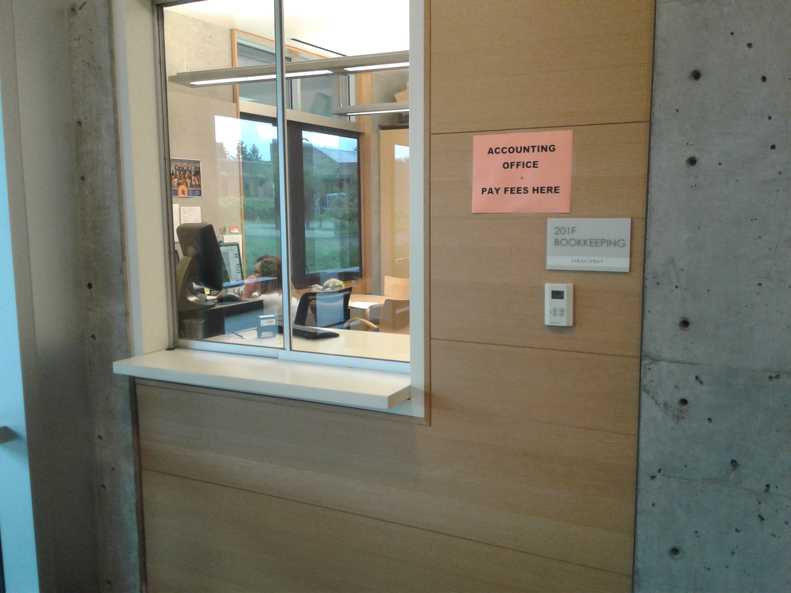

Welcome to the Virtual Tour!
Here, you will find a list of important places on the BHS Campus.
The Main Office

Main information desk
Sports information
Visitor sign-in
Drop off items from parents
Small item lost and found
PA announcements
The Counseling Offices
Come here to get help (personal friend, teacher)
Post high school planning
Scheduling issues
Transcript
Testing information
The Attendance Office

Late? - sign in and get a pink slip
Leaving early? - sign out and get a green slip
Parents must approve
Closed campus for 9th graders
The Nurse's Office

Sick? Anxious? Worried about a friend? Need to talk?
Question of the day
The Accounting Office

Pay all fees here
Class, sports and test fees
Club dues
Fines
The Library
Place to study and gather
Check out books
Tech and research support
Student printing
Open from 7:30am-4pm